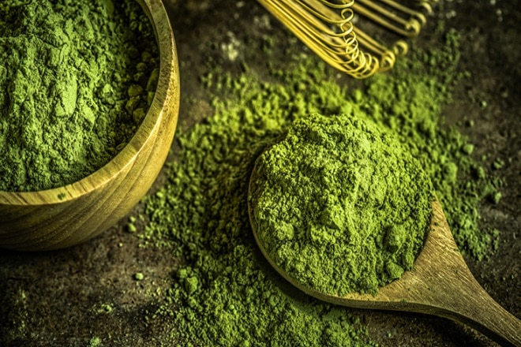
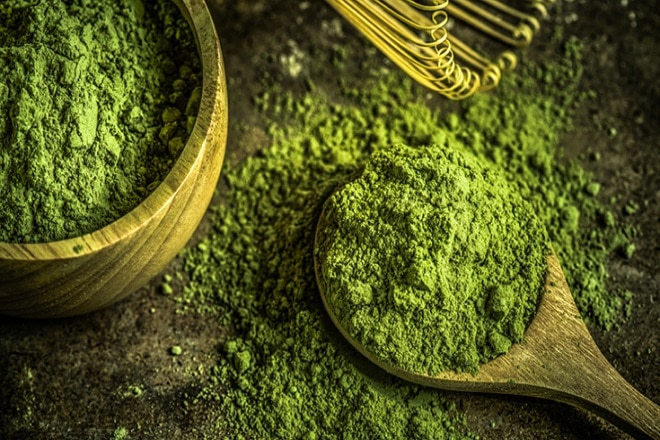
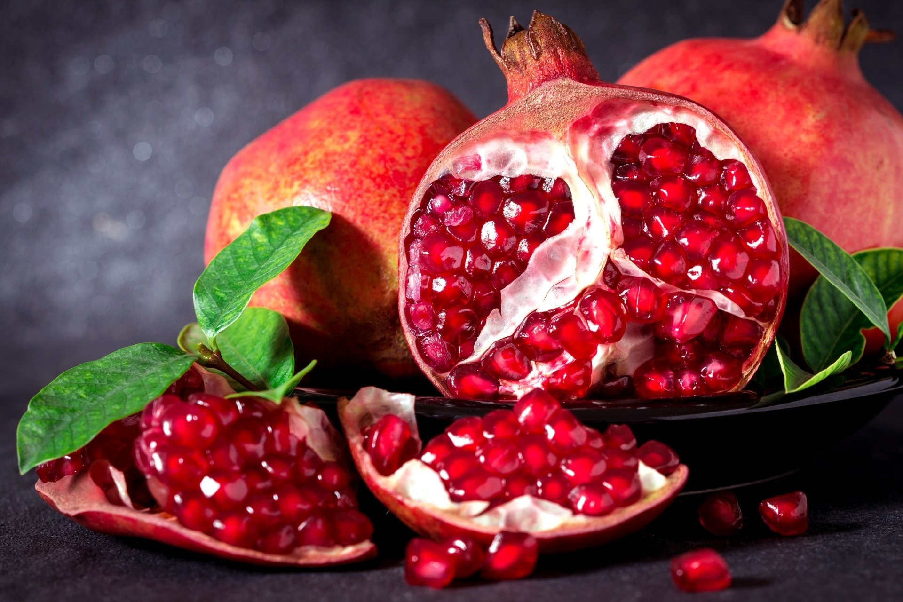
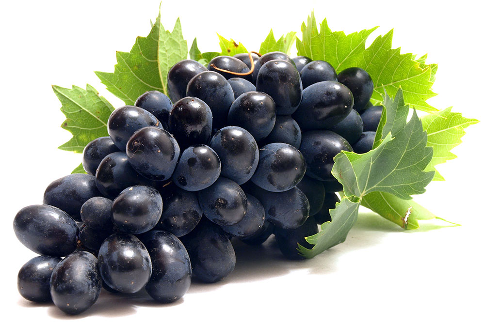
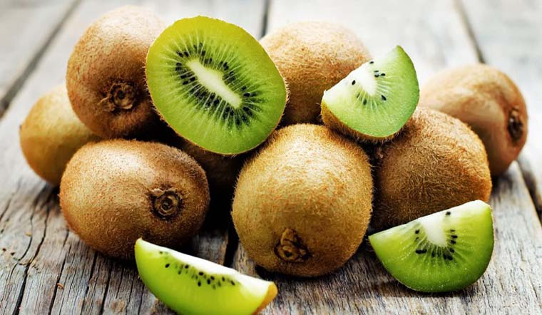
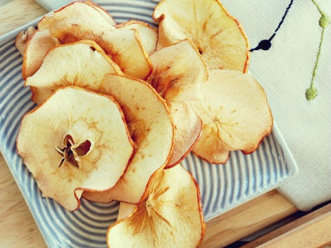

Step Into The World Of Organics!
Surprising Health Benefits
Green tea lovers raise your hands! The many health
benefits and most importantly its role in aiding
weight loss has made green tea one of the most
popular beverages of the millennium. While
the beverage is relatively new and just about
picking up in India, green tea has been consumed
in Japan and China for centuries
Surprising Health Benefits
Of Green Tea
Green tea lovers raise your hands! The many health
benefits and most importantly its role in aiding
weight loss has made green tea one of the most
popular beverages of the millennium. While
the beverage is relatively new and just about
picking up in India, green tea has been consumed
in Japan and China for centuries
 

100% FRESH FRUIT!
Let's step into the fruit world together

Therefore, when you eat pomegranate, it will bring a lot of good health effects such as: anti-aging, skin beautifying, anti-clotting effect anti-atherosclerotic and protect and restore liver and kidney
Therefore, when you eat pomegranate, it will bring a lot of good health effects such as: anti-aging, skin beautifying, anti-clotting effect anti-atherosclerotic and protect and restore liver and kidney

Grapes contain high levels of fiber. Grape juice contains dozens of nutrients that have anti-cancer and heart disease effects. Cold prevention, wrinkle removal, teeth whitening, weight loss, and heart protection.
Grapes contain high levels of fiber. Grape juice contains dozens of nutrients that have anti-cancer and heart disease effects. Cold prevention, wrinkle removal, teeth whitening, weight loss, and heart protection.
Mangoes have great uses, they have the ability to prevent cancer, prevent heat stroke, and strengthen the immune system. Mango leaves are good for people with diabetes Improve brain function, good for people with anemia.

Kiwi is a small fruit, but don't underestimate the kiwi fruit. This is a “super fruit” that contains a lot of nutritional benefits. Kiwi is rich in vitamins C and E. Kiwi also contains very high levels of serotonin. Kiwi is a fat-free fruit. 2 kiwis can provide more fiber than most whole grains.
Kiwi is a small fruit, but don't underestimate the kiwi fruit. This is a “super fruit” that contains a lot of nutritional benefits. Kiwi is rich in vitamins C and E. Kiwi also contains very high levels of serotonin. Kiwi is a fat-free fruit. 2 kiwis can provide more fiber than most whole grains.

People often warn that eating too much rambutan will cause heat, but this fruit provides a large amount of nutrients from nature including calcium, phosphorus, iron, copper, potassium, magnesium, manganese, vitamin B3, A, C as well as vitamin B9.

Pineapples are a great source of many of the healthful nutrients potassium, copper, manganese, calcium, magnesium, vitamin C, beta-carotene, thiamin, B6 and folate, soluble/insoluble fiber and bromelain.
PRODUCTS FROM FRUIT
Dried oranges

Dried apple
Dried sweet potato